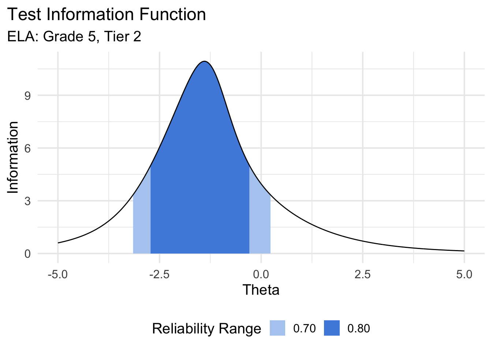
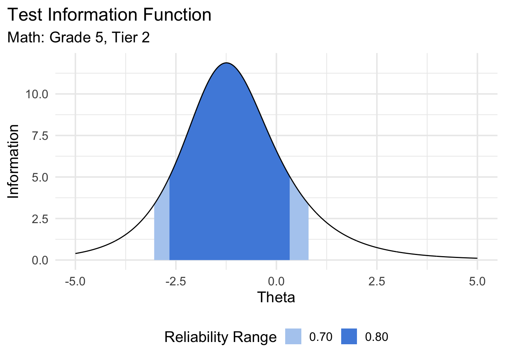
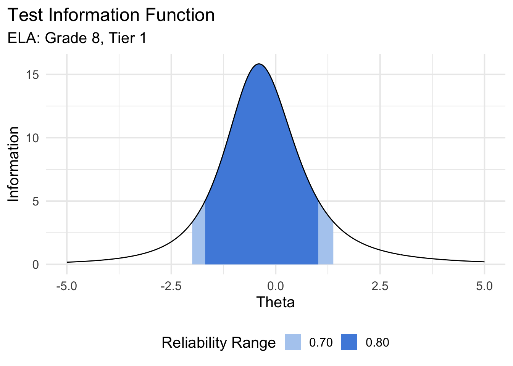
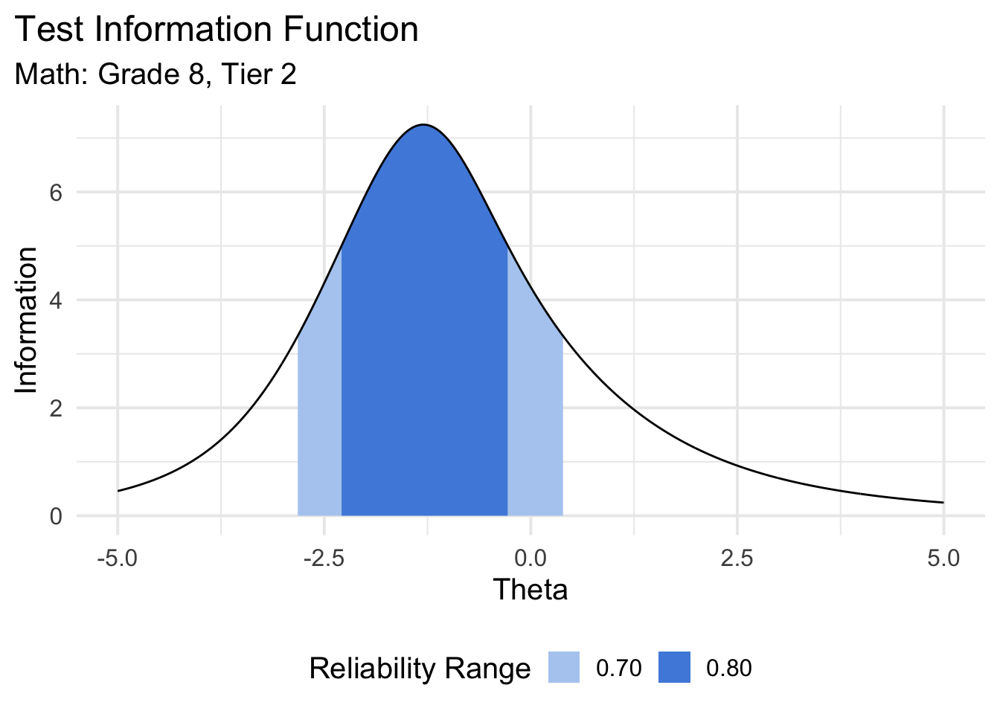
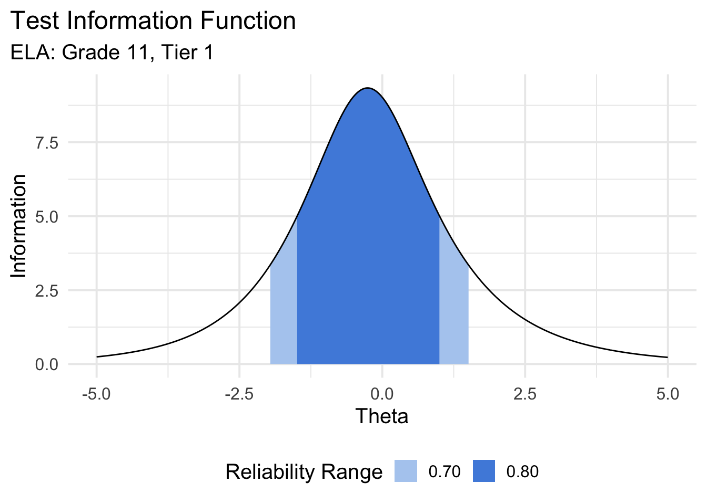
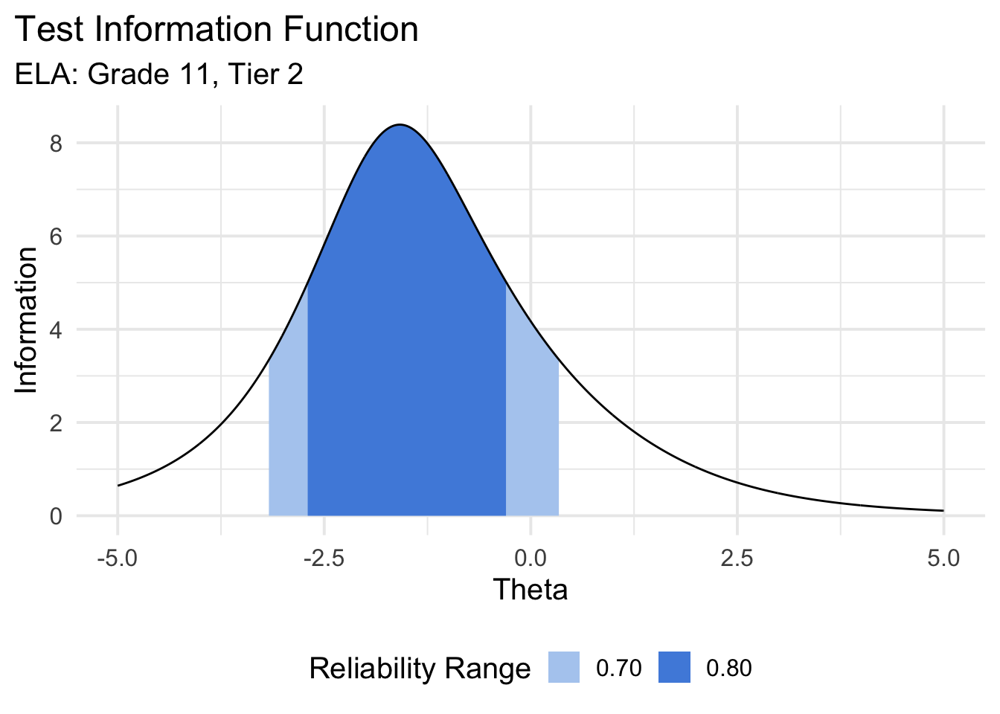
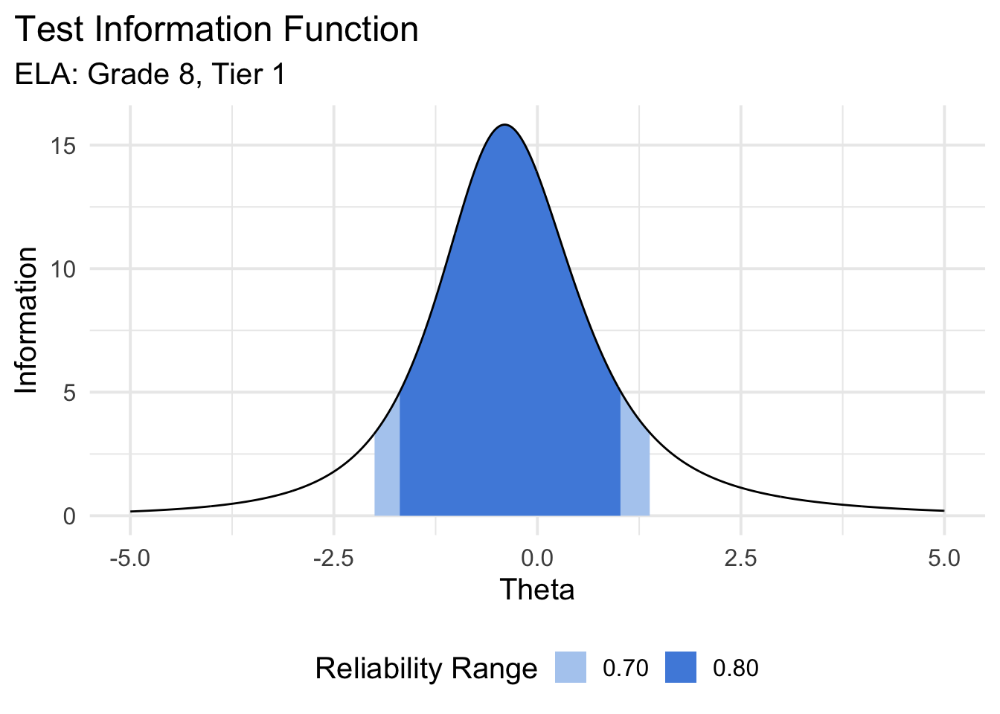
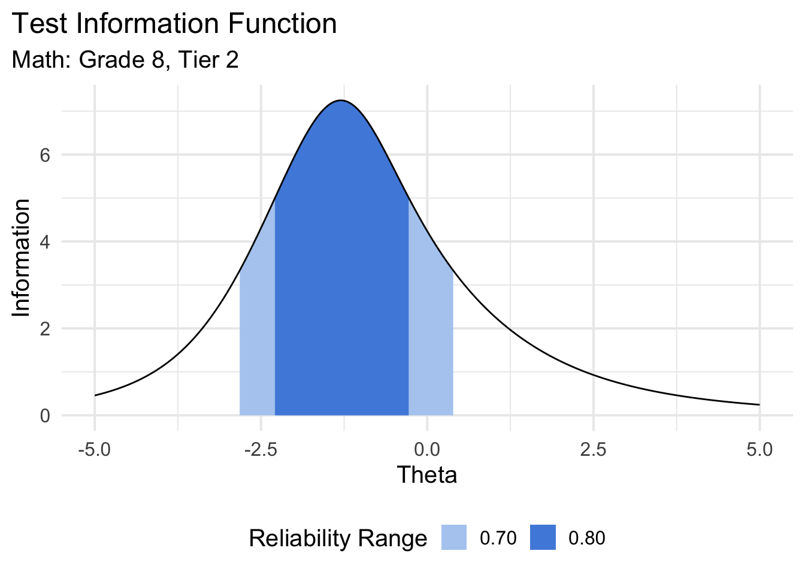
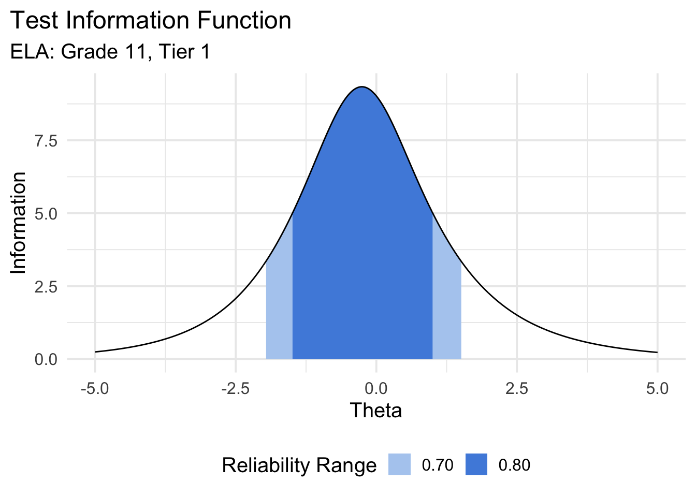
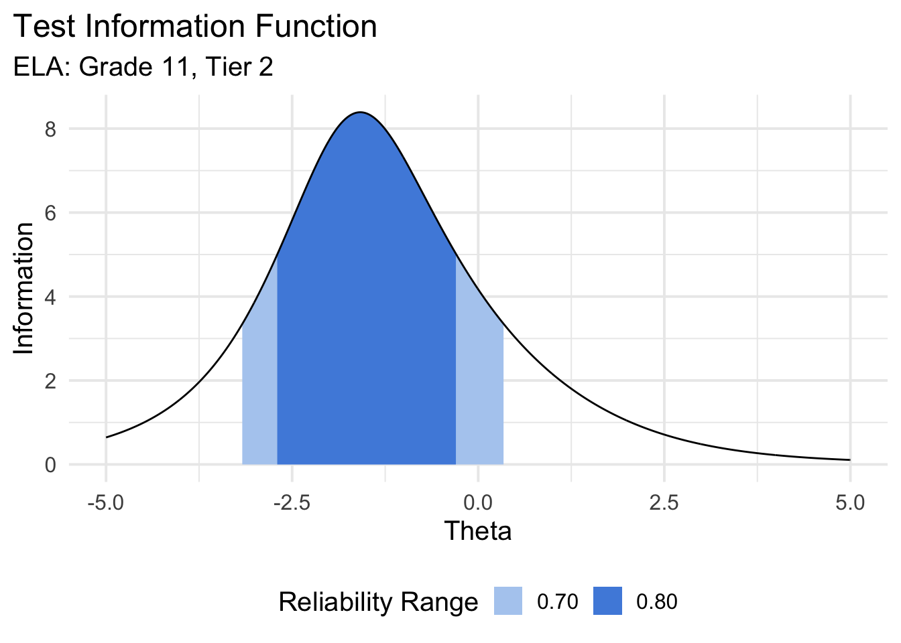

Chapter 3: Reliability
BRT
8/10/2020
Marginal Reliability
| Grade | Tier | Content | Marginal Reliability |
|---|---|---|---|
| 3 | 1 | ela | 0.87 |
| 3 | 1 | math | 0.83 |
| 3 | 2 | ela | 0.75 |
| 3 | 2 | math | 0.78 |
| 4 | 1 | ela | 0.85 |
| 4 | 1 | math | 0.85 |
| 4 | 1 | science | 0.65 |
| 4 | 2 | ela | 0.78 |
| 4 | 2 | math | 0.77 |
| 4 | 2 | science | 0.68 |
| 5 | 1 | ela | 0.82 |
| 5 | 1 | math | 0.84 |
| 5 | 2 | ela | 0.75 |
| 5 | 2 | math | 0.81 |
| 6 | 1 | ela | 0.86 |
| 6 | 1 | math | 0.86 |
| 6 | 2 | ela | 0.73 |
| 6 | 2 | math | 0.73 |
| 7 | 1 | ela | 0.85 |
| 7 | 1 | math | 0.85 |
| 7 | 2 | ela | 0.73 |
| 7 | 2 | math | 0.76 |
| 8 | 1 | ela | 0.83 |
| 8 | 1 | math | 0.79 |
| 8 | 1 | science | 0.59 |
| 8 | 2 | ela | 0.73 |
| 8 | 2 | math | 0.73 |
| 8 | 2 | science | 0.74 |
| 11 | 1 | ela | 0.83 |
| 11 | 1 | math | 0.78 |
| 11 | 1 | science | 0.64 |
| 11 | 2 | ela | 0.75 |
| 11 | 2 | math | 0.71 |
| 11 | 2 | science | 0.73 |
Test information functions

 
